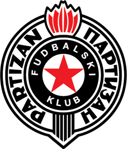

Fanpage Partizan je namenjen za sve ljubitelje sporta.Mi se bavimo analizom rezlutata i objavljivanjem svakakvih postova kako o igracima tako i o klubu.
Fudbalski klub Partizan je osnovan 4. oktobra 1945. godine kao deo Jugoslovenskog sportskog društva Partizan. Danas je ovo Sportsko društvo asocijacija 25 klubova u isto toliko sportova, čiji je član i dalje i Fudbalski klub, ali ima potpunu samostalnost u organizovanju, rukovođenju, finansijama, materijalnim dobrima i objektima. Osnivači Fudbalskog Kluba Partizan su jugoslovenska vojna lica i generali Peko Dapčević, Svetozar Vukmanović - "Tempo", Otmar Kreačić - "Kultura", Vlada Mađarić, Ratko Pejić, Vujica Gajinović, Ratko Vujović - "Čoče", Koča Popović, Mijalko Todorović - "Plavi" i Pavle Jovićević. Prvu utakmicu Fudbalski Klub Partizan odigrao je 06. listopada 1945. u Zemunu, a strijelac prvoga gola za Partizan bio je Florijan Matekalo u istoriji. Uz Fudbalski klub radi i nekoliko preduzeća kao deo poslovnog sistema Partizana. FK Partizan, uz svog najljućeg rivala, Crvenu Zvezdu, predstavlja najznačajniju srpsku ekipu i tim koji, u zadnjih nekoliko godina, održava Srbiju na UEFA rang listi evropskih ligaških takmičenja u blizini pozicije koja omogućava dva predstavnika u Ligi Šampiona.